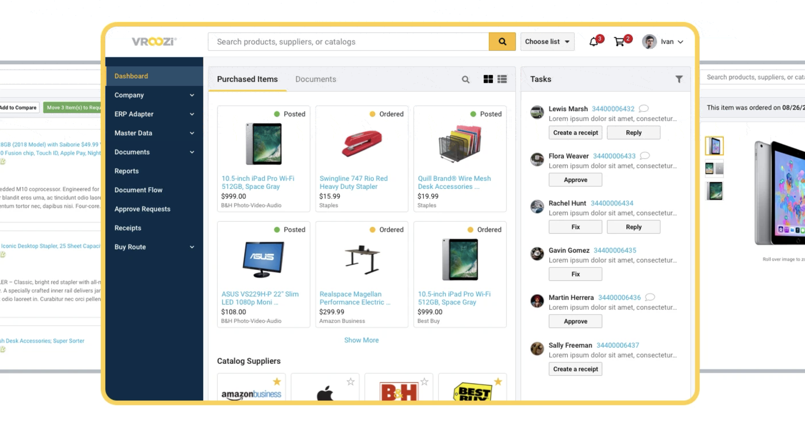

Redesigned a legacy B2B procurement platform using a "consumerized" UX philosophy — reducing task completion time by 75% and cutting data-entry errors by 82%.
role //
Product Designer (UX/UI/IXD)
timeline //
8 Months
context //
B2B SaaS Procurement Platform
responsibilities //
UX Research, Information Architecture, Visual Design, Interaction Design, Prototyping, Brand & Marketing Assets
the challenge //
Enterprise procurement platforms are historically notorious for complex, rigid user interfaces that require specialized training. At Vroozi, internal research and user drop-off data revealed that mid-market and enterprise employees were bypassing the official platform to buy office, IT, and operational supplies elsewhere—a phenomenon known as "maverick spend."
The existing purchase-requisition interface was bogged down by dense data tables, confusing accounting-string inputs, and an opaque approval workflow. Users felt like they were data-entry clerks rather than buyers.
high cognitive load
Requiring casual employees to manually input complex general ledger (GL) accounting codes led to a 14% form-abandonment rate.
lack of modern search
The internal catalog search lacked semantic understanding. If an employee searched for "MacBook cable" instead of the exact supplier SKU "USB-C to MagSafe 3," the system returned zero results.
friction in approval loops
Managers were hit with a wall of notifications containing unformatted raw data, leading to approval delays that stalled critical business operations.
my role //
As the sole Product Designer at Vroozi, I took complete ownership of the end-to-end design strategy for our core B2B procurement application. I joined a product that had faced years of feature-creep, where development and product teams had implemented user requests without UX oversight, resulting in a fragmented and complex interface.
My mandate was to audit the existing ecosystem, untangle complex procurement workflows, and completely redesign the UX/UI and interaction models. Working closely with product and engineering, I transformed the application into an intuitive, scalable platform while simultaneously creating the supporting brand, illustration, and marketing design systems to elevate the company’s market positioning.
my role //
- UX/UI & Interaction Design: Audited the legacy platform, mapped new user journeys, and redesigned the interface to fix navigation and usability issues.
- Prototyping & Executive Alignment: Built high-fidelity prototypes and presentations to secure buy-in from senior leadership and align product roadmaps.
- Design System & Asset Creation: Developed a cohesive visual identity from scratch, including custom iconography, illustrations, and photography for digital and print.
- Business Transformation: Re-architected the product to eliminate design debt, directly positioning the startup for its next phase of market success and funding.

the outcome //
We redesigned the Vroozi procurement module from the ground up, utilizing a "consumerized B2B" design philosophy. The goal was to make purchasing business supplies feel as familiar and effortless as shopping on Amazon or Target, while quietly maintaining strict corporate compliance and AI automation behind the scenes.
measuring success //
By bridging the gap between consumer-grade user experience and rigorous enterprise spend controls, the redesign delivered measurable financial advantages to both Vroozi and its corporate clients.
measuring success //
- Task Completion Time (TCT): The average time required for an employee to find an item and submit a purchase requisition dropped from 8.5 minutes to 2.1 minutes.
- Error Rate Mitigation: AI-driven automated accounting string assignment reduced manual data-entry errors by 82%, drastically cutting down the time procurement teams spent troubleshooting rejected purchase orders.